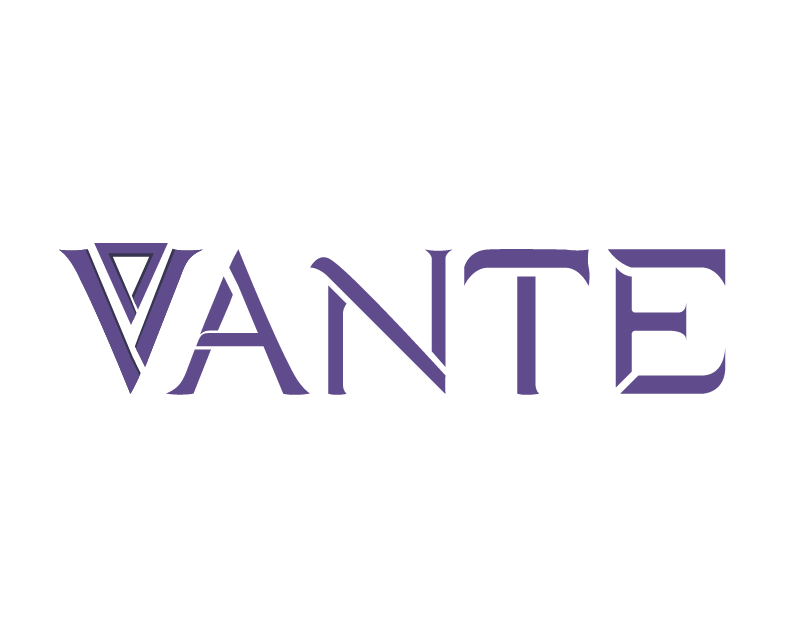

Animation & 3D
Hospital Corridor
Cinematic lighting study, horror atmosphere and environmental storytelling.

Creative Studio
Photography • Animation • Videography
Creative studio crafting cinematic worlds through light, motion and visual storytelling.
Scroll
Main Reel
A condensed look into the visual language of VANTE: atmosphere, rhythm, texture and cinematic composition.
Selected Work
A curated selection of visual projects across animation, photography and videography.
Animation & 3D
Cinematic lighting study, horror atmosphere and environmental storytelling.

Worldbuilding
Dark fantasy, post-apocalyptic visual development and atmospheric concepts.

Photography
Intimate portrait work focused on emotion, contrast and natural presence.

Videography
Rhythm, movement and visual mood designed around musical storytelling.

Cinematic Stills
Still imagery shaped by atmosphere, shadow and cinematic framing.

Short Film
A compact visual narrative exploring mood, silence and emotional tension.
Motion • Form • Atmosphere
Projects focused on 3D environments, cinematic animation, lighting, modeling, visual development and digital storytelling.
Animation & 3D
A dark corridor sequence focused on cinematic lighting, horror atmosphere, flickering emergency lights and environmental tension.
Game Concept
Visual exploration for a dark fantasy post-apocalyptic world combining ritual magic, corrupted lifeforms and worn futuristic structures.
Character / Creature
Character or creature animation study focused on silhouette, physicality, mood and dramatic presentation.
Simulation / Motion
Experimental animation study using motion, timing, rhythm, texture or simulation as the central visual language.
Environment
Environment design piece exploring scale, atmosphere, composition and cinematic depth.
Personal Study
Personal study focused on refining visual language, stylization, mood and cinematic storytelling.
Light • Emotion • Composition
A visual collection of portraits, concerts, products and cinematic stills shaped by contrast, natural presence and atmosphere.
Film • Rhythm • Story
Music videos, short films, commercials and cinematic experiments built around rhythm, atmosphere and visual direction.
Music Video
A rhythm-driven visual piece designed to support mood, performance and musical identity.
Commercial
A concise visual piece focused on product, brand presence and cinematic presentation.
Short Film
Narrative visual storytelling using silence, pacing, framing and emotional tension.
Behind The Scenes
A behind-the-scenes piece showing creative process, direction, production and atmosphere on set.
About VANTE
VANTE is the creative identity of Emiliano Cervantes, focused on photography, animation, videography and visual storytelling. The work explores cinematic atmospheres, dramatic composition, emotional presence and the creation of visual worlds with a strong sense of mood.
The studio vision is to grow into a multidisciplinary production space where film, music videos, photography, animation and 3D projects can coexist under one visual language.
Let’s Create
For collaborations, photography sessions, music videos, animation projects or visual development work, get in touch.